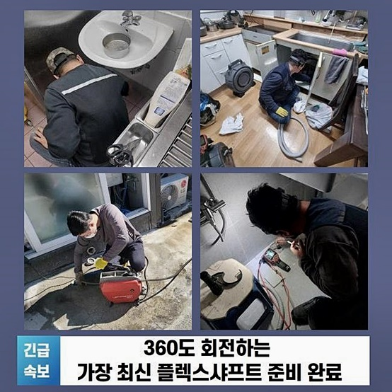
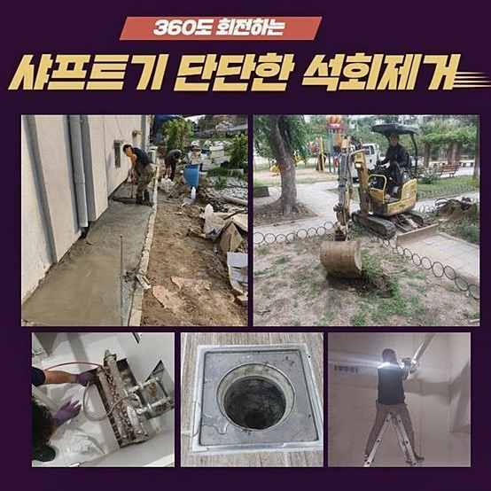
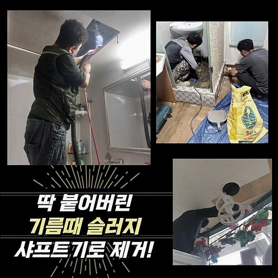
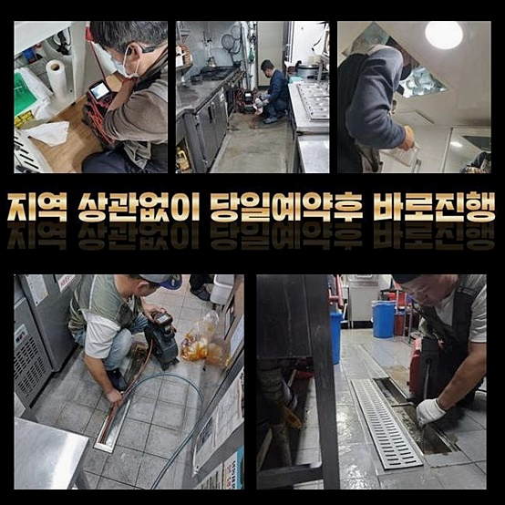
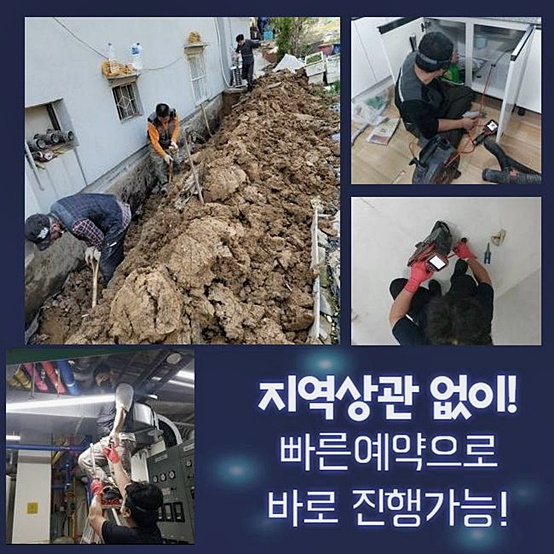
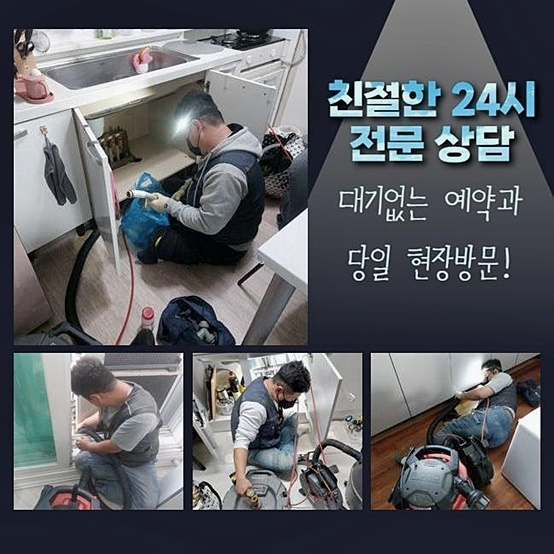
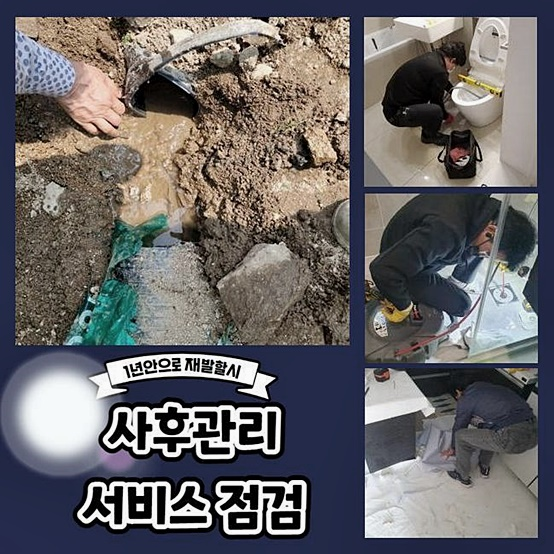

🏠 수원 호매실동씽크대역류 세류동 배관내시경카메라 설비업체
용인시 처인구 배관막힘 전문 시공 후기

📋 작업 개요
- 위치: 용인시 처인구, 수원시 영통구, 화성시 동탄
- 서비스 유형: 배관막힘, 하수구청소, 고압세척, 내시경점검
- 작업 일시:
- 업체명: 하수구수사대 (010-5615-2118)
🔍 문제 상황
수원 호매실동씽크대역류 세류동 배관내시경카메라 설비업체
가정의 배수관이 막혀서 생기는 상황들은 간단한 방법으로 해결하지만 공용으로 사용하는 배관이 망가진 경우라면 전문적인 진단이 필요하게되며 고가의 전문적인 기기들을 사용해도 빠르게 해결이 되지 못하는 현장이 대부분입니다
그런 상황일때는 저희처럼 다양한 상황에서 처리한 경험들을 갖추고있는 전문업체가 중요합니다
이번에 찾아간 복합오피스텔 현장의 문제는 배관이 막힌 것으로 고층의 집에서 사용한 물로 저층의 상가나 가정에 역류로 인한 악취가 생길 경우도 있습니다
고층에서 설거지나 샤워를 할때마다 1층의 상가들은 물이 내려가질 않고 더욱 심할때는 하수가 거꾸로 치솟는 일이 생기게 돼서 전세대에서 일상적인 활동이 어려워졌습니다
그렇게 반복되며 발생하는 배관의 막힌 현상으로 의뢰인분께서 하수관의 강한 압력 세정을 원하고 계셨습니다
우리팀은 현장의 문제내용을 자세히 보면서 종합적으로 따져보며 바로 작업에 착수하지 않고 예상비용들을 우선적으로 알려드리고 진행합니다
알려주신 주소지로 가서 문제점을 꼼꼼히 보니 적절하게 세척작업이 진행되지 못해서 노폐물이 가득한것으로 판단하였습니다

🔎 원인 분석
💡 전문가 진단: 정밀 진단 장비를 사용하여 슬러지의 고착 여부를 판명하고 타격/세척 작업을 실시했습니다.
가정집이나 상가들에서 일어난 작은 문제를 빨아들이는 석션기를 이용하거나 단단한 침전물을 파쇄하는 샤프트기계로 초반부에 작업을 했었다면 중요 하수시스템까지는 수리하지 않아도 되었을 거예요
오랜시간 중요한 하수시스템이 막혀버린 상황들이라 말씀드린 장비들로는 문제들을 처리하기는 힘들게 되었습니다
배수관 점검들을 시행해보니 지속된 막힘현상으로 배수로가 변형이 된 부분들이 전반적으로 확인되고 있었습니다
불순물과 슬러지들이 적재되면서 하수로에 부담을 주게되어 관자체가 헐겁게 변형되는 경우들이 있어, 그런 현상을 막기위해 스테인리스밴드로 단단하게 고정해두고 관의 안쪽을 씻는 과정을 시행했습니다
외벽의 배관에서 하수관 안쪽을 비추는 장비들을 맞춰넣어 청소작업이 들어가야하는 부위를 하나씩 체크하였습니다
안을 볼 수있는 장비들은 침전물이나 오염원이 관의 안쪽 벽면에 굳어있는 상태를 실시간으로 확실히 파악 가능하게합니다
고압을 이용하는 장비들은 강한압으로 발사하는 하수들로 오염물질을 완벽하게 세정해내며 배관에만 사용할 수있게 제작을 한 기계를 이용합니다
하수라인이 길이가 꽤 있고 기계가 닿지못하는 일들이 발생했고 세척작업을 하면서 관에 달라붙은 오염물을 동시에 제거하는 작업으로 신경을 전반에 걸쳐 써야 했습니다

🔧 작업 과정
기름침전물로 배수구가 역류하는 상황들을 방지하려면 주방용품에 발생하는 기름때를 종이타올로 닦아내고 배수망을 통해 걸러내고 버리는 평소습관이 가장 중요하겠죠
하수관 말썽으로 고생하시는 고객께서는 오래된 전문적인 업체를 통해 해결방법을 함께 찾아보셔야해요
저희 전문진은 오랜 경험으로 가장 빠르면서 정확하게 문제상황을 해결할 전문진으로서 믿고 맡겨주세요
하수로의 문제발생 부위가 5m에서7m를 넘어가는 긴상태라면 상세한 진단들과 조심스럽게 확인하는 작업이 매우 중요합니다
긴배수관은 배관의 입구와 출구를 포함해 중간부위에서도 더블로 세척하는 과정이 중요하게 됩니다
오염원이 흐르지 못하도록 방지과정을 먼저하고 호스가 연결된 기계를 작동시켜 하수로 가운데쯤에 막혀버린 침전물과 오염물질을 처리했습니다
작업을 거의 종료할때쯤 건물외벽의 하수로 고도의 압력으로 세척하는 과정을 진행했어요
건물밖으로 설치가 되어있는 하수관이므로 고압력을 사용하여 이중으로 세정작업들을 완료 했습니다
고압을 이용하는 장비들은 좁은반경의 배수관을 좀더 확실한 방법으로 뚫어내는 기기로서 건물밖으로 노출이 된 배수로에서 이용됩니다
건물 안쪽에선 전체적으로 손상을 주는 경우도 있어서 외벽의 배관 부분에서 활용이 보편적입니다
내시경기기로 점검한후 케이블라인을 문제부위에 중심으로 넣는 것을 시작으로 오염원이 가득한 지점들을 완벽하게 청소하였습니다
이물질 제거후 정상적인 순환을 내시경으로 보는게 가능했고 고도의 압으로 안쪽에 붙어있던 노폐물이 오수와 시원하게 배출되는 모습을 직접 보고나서 마무리를 했습니다
기름슬러지들과 기타 오염원을 세정하고 재검을 시행하여 청소가 완벽히 진행 되었는지 순환이 정상적인지 시험해보는 단계는 중요한 최종중요한 중요한 작업입니다


✅ 작업 완료
위와같은 과정은 건물내외부의 배관에 강력한 압의 세정을 마치고 난후에도 층층이 설비 되어진 하수라인을 비롯해 맨홀뚜껑으로 쭉 이어진 중요배수관을 끝으로 완벽하게 진단하는 필수필수적인 절차입니다
우리팀이 처리완료한 문제는 각층에 설치된 가지배관들로부터 맨홀지점으로 쭉 이어진 중요 하수로를 끝으로 완벽하게 처리했습니다
앞에서 보신 경우처럼 고객님께서도 그러한 배수관 역류증상이 발생한다면 방치하며 참지마시고 저희팀에 의뢰하시어 역류현상과 악취의 이유를 알아보고 확실한 배수관 수리과정을 안내 받아보세요
우리팀은 항상 의뢰인분의 편리한 삶을 영위하실수 있도록 최선을 다하겠습니다 하수관 세척시 예상비용이 궁금하신 경우라면 지금 전화주세요




⚠️ 하수구 배관 막힘 예방 및 관리 가이드
- ✅ 머리카락, 비닐, 물티슈 등 물에 분해되지 않는 이물질은 절대 흘려보내지 마세요.
- ✅ 기름기 많은 식기는 설거지 전 키친타올로 먼저 기름때를 닦아내세요.
- ✅ 주기적으로 배수구에 뜨거운 물을 가득 부어주어 유지방 고착을 방지하세요.
- ✅ 작업 후 1년 이내 재발 시 무상 A/S 보증 서비스를 제공합니다.
💡 핵심 정리
- 확실한 장비 작업(내시경 점검 및 샤프트 스케일링)으로 원인을 뿌리 뽑습니다.
- 작업 후 1년 이내에 동일한 부위 재발 시 100% 무상 A/S 서비스를 보장합니다.
- 서울 · 경기 · 인천 전 지역에 24시간 언제든 긴급 출동할 수 있도록 항시 대기 중입니다.
❓ 자주 묻는 질문 (FAQ)
🚨 용인시 처인구 배관막힘 문제로 고민이신가요?
정확한 원인 진단과 확실한 시공으로 재발 없는 해결을 약속드립니다.
24시간 긴급 출동 | 서울 · 경기 · 인천 전지역 | 1년 내 재발 시 무상 A/S